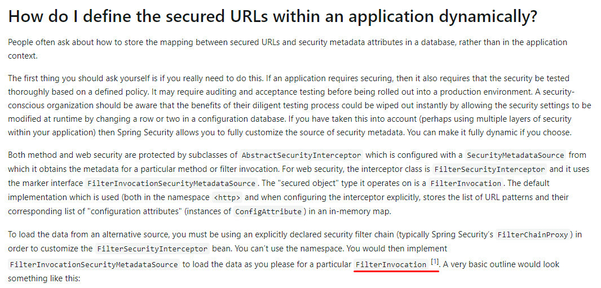

我开始做jaeger业务单据的时候，自动冒出来的标题所说问题，稍微一想远就发现在系统里动态管理角色权限会带来很多麻烦。之前读文档的时候也见到了相关QA但没注意，现在有点悟了。
首先，很明显安全性会降低：数据库里随便改一行两行，所谓的安全控制直接就没了嘛。
其次，业务上有时候会需要根据当前用户（的角色）来执行不同的操作，如员工只能看到自己创建的单据、领导能看到所有人的单据——类似于这种情况下如果角色是允许动态增删改的，那么程序的正常流转都无法独立于数据——因需做分支判断，查个列表竟然都要先获取下角色，显然是无法接受的。
考虑到SpringSecurity只负责管控“有没有权限”这一点，不应该切入到具体业务中，我决定给用户加上”等级“来区分员工或领导，最终实现用security来控制能不能见到菜单、能不能调接口，用等级来控制能看到哪些数据。
最后贴一下 原文

[1] The FilterInvocation object contains the HttpServletRequest, so you can obtain the URL or any other relevant information on which to base your decision on what the list of returned attributes will contain.
1 | public class MyFilterSecurityMetadataSource implements FilterInvocationSecurityMetadataSource { |